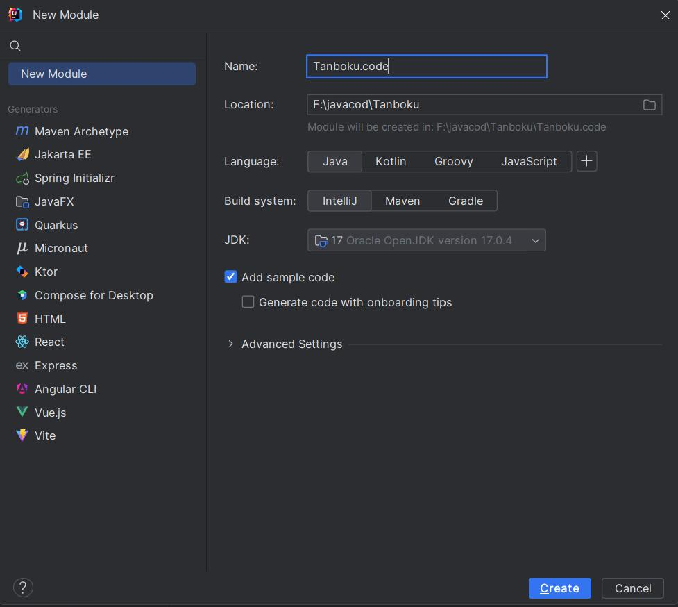
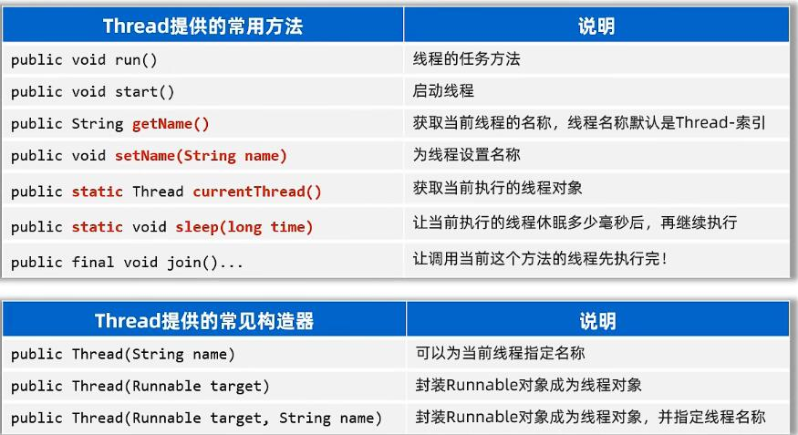

JAVA
欢迎来到《期末速成-JAVA篇》接下来，我会从编译器的安装开始，逐步总结java的知识点
目录
1.第一个JAVA代码2.Java入门
3.Java语法
4.程序流程控制
5.Java数组
6.Java方法
7.面向对象编程
8.常用API(应用程序编程接口)
9.面向对象高级一
10.面向对象高级二
11.面向对象高级三
12.常用API
13.常用API（二）
14.集合
15.异常
16.IO流
17.多线程
1.第一个JAVA代码
由于是速成，所以对于jdk以及idea的安装在这里不多赘述。
不过额外提一下，我所用的idea版本是2023.3.1，系统是windows，旗舰版，用的是破解版，破解步骤可以上b站搜或者申请学生认证
在这里附上我的破解方法：点击跳转
在下载好后打开idea
点击中间的New Project创建新工程
接下来我们创建一个空项目,并命名
我个人建议是把项目放到一个专门的文件夹里，像我这里就放到了F盘的javacode，代表java的代码
项目创建好后，在敲代码之前我们还需要创建一个模块
我们将其命名
在那之后，点开我们刚刚创建的模块底下的src文件夹，在src下创建一个包
在包下创建一个java类，我们就可以开始敲代码了
接下来输入我们第一个java代码
package javacode.test;
public class HelloWorld {
public static void main(String[] args) {
System.out.println("Hello World");
}
}
输出
Hello World
2.Java入门
注释
首先是注释，任何代码都有自己的注释java的注释分为单行注释，多行注释，文档注释
//这是单行注释
/*
这是多行注释
*/
/**
这是文档注释
*/
字面量
然后是字面量，有整数，小数，字符，字符串，布尔值，空值
按照顺序，关键字分别为int、double、char、String、boolean、null
其中，字符必须使用单引号且只能有一个字符，字符串为双引号，布尔值只有true和false两个值
变量
接下来是变量，首先给出变量的定义格式
数据类型 变量名 = 数据;
举个例子
package javacode.test;
public class HelloWorld {
public static void main(String[] args) {
int a=10;
System.out.println(a);
a=12;
System.out.println(a);
}
}
我们首先定义了一个变量a，值为10，输出后为10，接下来更改变量的值为12，输出后就是12了
关键字
然后是关键字，关键字就是java语言自己用到的一些词，有特殊作用的，我们称之为关键字
例如：class，int，double等
具体有哪些关键字，不用特意去记，通过接下来的学习，都会慢慢记住的
标识符
最后是标识符，标识符就是名字，是我们写程序时起的名字，像是类名，变量名
标识符的规则需要知道，由数字、字母、下划线(_)和美元符号($)组成，标识符强制要求不能以数字开头，不能是关键字，区分大小写
3.Java语法
ASCII表的编号，每个字符都有属于自己的编号，我们需要记住0、a、A的编号即可，分别对应48、97、65
数据类型
基本的数据类型有4大类，8八种
注意：如果随便写一个整型字面量默认是long类型，需要数字后面加上L/l，小数字面量默认是double，float后面加f
举个例子
long lg=424242244444L;
float f=3.14f;
此外，还有一个引用数据类型，String称为字符串类型，用来记住一个字符串数据
类型转换
自动类型转换
首先来说自动类型转换，简单来说，类型范围小的变量，可以直接赋值给雷响范围大的变量
比如byte类型变量可以赋值给int类型变量，举个例子
byte b =10;
int a = b;
System.out.println(a);
我们可以发现成功输出了10
关于自动类型的转化有一些其他的形式
表达式自动类型转换
接下来说表达式的自动类型转换
在表达式中，小范围类型的变量，会自动转换成表达式中较大范围的类型，再参与运算
要注意，表达式的最终结果类型由表达式中的最高类型决定，在表达式中、byte、short、char是直接转换成int类型参与运算的
举个例子
byte a = 10 ;
int b = 20;
long c = 30;
long r = a + b + c;
System.out.println(r);
像这里，a，b就转换成了long类型
byte a = 10;
byte b = 12;
byte c = a + b;
System.out.println(c);
像是这样就会报错，因为在表达式中byte会转换成int，所以c应该用int定义
强制类型转换
最后说强制类型转换
类型范围大的数据或变量直接赋值给类型范围小的变量会报错，因为java害怕会超范围，那么怎么让范围大的赋予范围小的呢
那就是强制类型转换，格式为：数据类型 变量1 = (数据类型)变量2、数据
举个例子
int a = 20;
byte b = a;
像这样就会报错，但是加上强制类型转换后
int a = 20;
byte b = (byte)a;
像这样就不会报错了
如果范围大于要转换的，将会根据原数据的二进制，多余的丢失，小数部分直接丢掉，返回整值
运算符
基本算数运算符
注意：如果两个整数做除法，其结果一定是整数，因为最高类型是整数
与字符串做+运算时会被当成连接符，其结果还是字符串
自增自减运算符
注意：只能操作变量，不能操作字面量
如果单独使用前面后面没区别，非单独使用，放变量前先进行自增自减，再使用变量，后面反之
下面举个例子
int c = 10;
int d = 5;
int rs3 = c++ + ++c - --d + 1 + c--;
System.out.println(rs3);
System.out.println(c);
System.out.println(d);
最后输出结果是31，11，4，换成数字就是 rs3 = 10 + 12 - 4 + 1 + 12 = 31
赋值运算符
除了最开始我们学的 = 还有一些扩展的
关系运算符
如图，返回值是boolean
逻辑运算符
如图，把多个条件放在一起运算，最终返回布尔类型的值：true、false
注意逻辑与或和短路与或的区别
三算运算符
先介绍格式：条件表达式 ？ 值1 : 值2;
执行流程为：首先计算关系表达式的值，如果值为true，则返回值1，如果为false，返回值2，举个例子
double score = 98.5;
String s = score >= 60 ? "成绩及格" : "成绩不及格";
System.out.println(s);
因为score大于60，所以s的值为“成绩及格”
运算符优先级
从键盘输入数据
控制台中绿色为输入的数据
总结：
1、导包：
import java.util.Scanner;
2、抄代码得到扫描器对象：
Scanner sc = new Scanner(System.in);
3、抄代码等待用户输入的数据
int age = sc.nextInt();
String name = sc.next();
4.程序流程控制
分支结构
if分支
根据条件（真或假）来决定执行某段代码
if是如果，else是否则，很明了，举个例子
double t = 36.9;
if(t > 37.5){
System.out.println("体温异常");
}
else{
System.out.println("体温正常");
}
因为 t<37.5所以执行else里的语句
switch分支
是通过比较值来决定执行哪条分支
流程为通过比较表达式的值等于哪个case后面的值，遇到break退出，没遇到继续执行，没有case相对应就执行default
注意：表达式不支持double,float,long，且case给出的值不允许重复，只能是字面量，不能是变量
循环结构
for循环
循环就是控制一段指令连续多次执行，比如我想连续输出五行“Hello World”
for (int i=1;i<=5;i++){
System.out.println("Hello World");
}
在for中的参数，第一个是初始化语句，第二个值如果满足条件就循环，不满足就退出，第三个让i自加，当自加5此后不满足第二个条件，退出循环
while循环
举个例子，还是输出五行“Hello World”
int i=5;
while (i-->0){
System.out.println("Hello World");
}
i初始等于五，每循环一次就减一，等于零退出循环
do-while循环
还是那个例子
int i=5;
do {
System.out.println("Hello World");
i--;
}while(i>0);
和while一个原理，不同的是do-while是不管表达式满不满足要求，先进行一遍循环再判断
死循环
就是可以一直执行下去的一种循环，如果没有干预不会停下来，举个例子
循环嵌套
循环嵌套的特点就是外部循环每循环一次，内部循环就会全部执行完一轮
就是循环中又包含循环，还是举个例子
for (int i=1;i<=3;i++){
for(int j=1;j<=3;j++){
System.out.println("今天是学java的第" + i + "天的第" + j + "节课");
}
}
输出结果为
今天是学java的第1天的第1节课
今天是学java的第1天的第2节课
今天是学java的第1天的第3节课
今天是学java的第2天的第1节课
今天是学java的第2天的第2节课
今天是学java的第2天的第3节课
今天是学java的第3天的第1节课
今天是学java的第3天的第2节课
今天是学java的第3天的第3节课
具体用法具体实例具体分析
跳转关键字
有两个，break和continue
break：跳出并结束当前所在循环的执行，只能用于结束所在循环，或结束所在switch分支的执行
continue：用域跳出当前循环的档次执行，直接进入循环的下一次执行，只能在循环中使用
举两个例子
for (int i=1;i<=5;i++){
System.out.println(i);
if(i==3)break;
}
System.out.println("------------------------");
for (int i=1;i<=5;i++){
if(i%2==0)continue;
System.out.println(i);
}
最后的输出结果为
1
2
3
------------------------
1
3
5
在上面的代码里，我写了两个循环，第一个循环是循环输出五次，但是我在第三次的时候break了，所以只输出到了3
第二个循环则是如果当前i为偶数，就continue，跳过此次循环，所以输出结果全是奇数
5.Java数组
数组就是一个容器，用来存储一批同种类型的数据
举个例子
静态初始化数组
静态初始化数组的格式
要注意，数据结构[] 数组名也可以写成数据类型 数组名[]，而什么类型的数组只能存放什么类型的数据
数组的遍历
遍历就是一个一个数据的访问，举个例子
int arr[]= new int[]{1,2,3,4,5};
for(int i=0;i< arr.length;i++){
System.out.println(arr[i]);
}
这里arr.length代表数组的长度
最后可以输出
1
2
3
4
5
动态初始化数组
就是定义数组时不存入具体的元素值，之确定数组存储的数据类型和数组的长度
不过要注意，静态初始化和动态初始化数组的写法是独立的，不可以混用，例如
int[] arr = new int[3]{30,40,50};
就是错的
对于动态初始化数组元素默认值规则，整形默认值是0，浮点型默认值是0.0，布尔类型默认值是false，引用类型比如类，接口，数组，String的默认值是null
6.Java方法
方法就是一种语法结构，它可以把一段代码封装成一个功能，以便重复使用
方法的定义
对于方法的完整格式：
举个例子，我现在像要求两个数的和，但我要求很多数的和，我不想写那么多的加号，那我可不可以把两个数相加的步骤存下来，这样在算另外两个数相加时直接把这两个数丢进去就可以了
package javacode.test;
public class HelloWorld {
public static void main(String[] args) {
int a = 10;
int b = 12;
int c = sum(a,b);
System.out.println(c);
}
public static int sum(int a,int b){
int c = a + b;
return c;
}
}
最后结果成功输出了22，我将a与b的值给了方法sum，在sum中相加并返回赋值到c上，成功输出了22
在方法定义时有几个注意点，修饰符暂时都使用public static修饰，如果申明了返回值类型，内部必须使用return返回对应类型的数据，而且要写在main外面
在方法中的形参列表可以有多个，甚至可以没有；如果有多个形参，多个形参必须用“,”隔开，且不能给初始化值
方法的其他形式
如果方法不需要返回数据，返回值类型必须申明成void（无返回值申明），此时方法内部不可以使用return返回数据
方法如果不需要接收数据，则不需要定义形参，且调用方法时也不可以传数据给方法了
方法形参列表有几个就传几个，不然会报错
方法在类中位置放前后无所谓，不能在方法中定义方法
Java的参数传递机制
基本类型的参数传递
对于java的参数传递机制都是值传递，所谓的值传递，指的是在传输实参给方法的形参的时候，传输的是实参变量中存储的值的副本
实参就是调用方法时括号内的值，形参就是形参列表里的变量，当传递的是实参的值时，形参的改变不会影响实参的值
引用类型的参数传递
举个例子
我们传递的是数组，实参是传的数组的名，也就是数组的地址，形参接收地址后，再对数组进行修改时，修改的是形参所接受的地址的数据，这样实参的数据就被形参改变了
方法重载
定义：一个类中，出现多个方法的名称相同，但是它们的形参列表是不同的，那么这些方法就称为方法重载了
还是举个例子，我想定义一个方法num，传入一个整数参数的时候返回实参的平方，传入两个整数参数的时候返回整数之和，传入两个字符串的时候返回字符串的拼接
package javacode.test;
public class HelloWorld {
public static void main(String[] args) {
System.out.println(num(5));
System.out.println(num(10,12));
System.out.println(num("Hello","World"));
}
public static int num(int x,int y){
int z = x + y;
return z;
}
public static int num(int x){
return x*x;
}
public static String num(String x,String y){
return x+y;
}
}
最后输出的结果为25，22，HelloWorld
注意事项：
一个类中，只要一些方法的名称相同，形参列表不同，那么它们就是方法重载了，其他都不管，修饰符返回值类型是否一样无所谓
形参列表不同指的是形参的个数、类型、顺序不同，不关心形参的名称
return关键字
return在无返回值方法中是可以单独使用的，作用就是立即跳出并结束当前方法的执行，就像循环中的break关键字一样
7.面向对象编程
简单来说，就是开发一个一个对象，把数据交给对象，再调用对象的方法来完成对数据的处理
对象本质上是一种特殊的数据结构，对象中所能存储什么数据，都是再对象所对应类中对应，所以我们想要做到怎么事情就在对应类中定义即可
而类，也就是class，就是所谓对象的设计图，在类中设计对象的各种属性，例如姓名，年龄，成绩等
this关键字
this就是一个变量，可以用在方法中，来拿到当前的对象
比如，现在有两个对象，一个对象叫小明，一个叫小红，两个对象都有自己的零花钱，小明有10元，小红有12元，那么当小明使用this关键字的时候就会返回10，同样，小红用就是12元
再举个例子，在定义方法时会有形参，如果实参和形参名字一样，访问就冲突了，那么我在其中一个参数前加上一个this，带有this的参数就是方法中定义的变量的值，不带this的参数就是形参所接受的值
所以this就是用来在开发中解决变量冲突问题的
构造器
首先介绍构造器的写法，就是public 类名(参数，可写可不写){}
package javacode.test;
public class HelloWorld {
public static void main(String[] args) {
}
public HelloWorld(){
}
public HelloWorld(String Hello,int World){
}
}
像这里，我定义了一个无参的构造器，一个有参的构造器，构造器的作用是在定义类的对象时，会根据定义对象的参数列表来选择执行对应的构造器
举个例子
HelloWorld h1 = new HelloWorld();
HelloWorld h2 = new HelloWorld("hello",123);
像这里，我就分别定义了两个对象，一个调用了无参的构造器，一个调用了有参的构造器
要注意，类在设计时，如果不写构造器，java会为类自动生成一个无参构造器，一旦定义了有参构造器，java就不会帮我们的类自动生成无参构造器了
封装
对于面向对象编程有三大特征：封装、继承、多态
封装就是用类设计对象处理某一个事物的数据时，应该要把处理的数据，以及处理这些数据的方法，设计到一个对象中去
而封装的设计规范就是合理隐藏、合理暴露
那么如何隐藏呢？简单来说就是修改权限，之前我们的修饰符是用的public，如果将public改为private就隐藏起来了，这时候你直接用对象调用是会报错的，因为被隐藏起来了，对象找不到
实体JavaBean(实体类)
实体类就是一种特殊形式的类
这个类中的成员变量都要私有，并且要对外提供相应的getXxx，setXxx方法
类中必须要有一个公共的无参的构造器，举个例子
package javacode.test;
public class HelloWorld {
//1.这个类中的成员变量都要私有，并且要对外提供相应的getXxx，setXxx方法
private int a;
private double b;
//2.类中必须要有一个公共的无参的构造器
public HelloWorld() {
}
public HelloWorld(int a, double b) {
this.a = a;
this.b = b;
}
public int getA() {
return a;
}
public void setA(int a) {
this.a = a;
}
public double getB() {
return b;
}
public void setB(double b) {
this.b = b;
}
}
这时候我们就创建了一个HelloWorld的实体类，接下来就能使用对象来对实体类里的变量进行操作了
实体类只负责数据存取，而对数据的处理交给其他类来完成，以实现数据和数据业务处理相分离，再想进行操作时可以额外写一个操作类
成员变量与局部变量的区别
8.常用API(应用程序编程接口)
API其实就是人家已经写好的方法，我们学会了直接拿来用就可以了
包
包是用来分门别类的管理各种不同程序的，类似于文件夹，建包有利与程序的管理和维护
建包的语法格式：package 包名;
通常来说，建包语句idea都是给我们写好了的
要注意，同一个包下的类，互相可以直接调用
如果当前程序中要调用其他包下的程序，则必须在当前程序中导包，才可以访问，导包格式：imporet 包名.类名
如果当前程序中要调用java提供的程序，也需要先导包才可以使用；但是java.lang包下的程序是不需要我们导包的，可以直接使用
如果当前程序中要调用多个不同包下的程序，而这些程序名正好一样，此时默认只能导入一个程序，另一个程序必须带包名访问
String
java.lang.String代表字符串、封装字符串数据、处理字符串的方法
只需要创建对象、封装字符串数据、再调用String方法即可
String创建对象封装字符串数据有两种方式，第一种方式：java程序中的所有字符串文字都为此类的对象
方式二：调用String类的构造器初始化字符串对象，这里列举几个常见的构造器
String的常用方法
这里列出一些常用的方法
String注意事项
String对象的内容不可改变，被称为不可变字符串对象
如果试图改变字符串对象实际上是新产生了新的字符串对象，变量每次都是指向了新的字符串对象，之前字符串对象的内容确实是没有改变的，因此说String的对象是不可变的
只要是以“...”方式写出的字符串对象，会存储到字符串常量池，且相同内容的字符串只存储一份
但通过new方式创建字符串对象，每new一次都会产生一个新的对象放在堆内存中
ArrayList
集合是一种容器，用来装数据的，类似于数组
由于数组定义完成并启动后，长度就固定了，所以要学习集合
而集合大小可变，在开发中用的更多
集合会提供创建容器对象的方式，会提供相应的方法对容器进行操作（增删改查）
而ArrayList是用的最多、最常见的一种集合
9.面向对象高级一
static关键字
叫静态，可以修饰成员变量，成员方法
成员变量按照有无静态修饰分为两种：类变量和实例变量（对象的变量）
类变量：有static修饰，属于类，在计算机里只有一份，会被类的全部对象共享，推荐用类名访问类变量
实例对象（对象的变量）：无static修饰，属于每个对象的，实例对象不能用类名去访问
static修饰成员方法
成员方法按照有无静态修饰分为两种，类方法和实例方法
类方法：有static修饰的成员方法，属于类，可以通过类名和对象名访问，这里推荐用类名进行访问
实例方法：无static修饰的成员方法，属于对象，可以通过对象进行访问，无法通过类名访问
static的注意事项
1.类方法中可以直接访问类的成员，不可以直接访问实例成员
2.实例方法中既可以直接访问类成员，也可以直接访问实例成员
3.实例方法中可以出现this关键字，类方法中不可以出现this关键字
static的应用知识：代码块
代码块是类的5大成分之一（成员变量、构造器、方法、代码块、内部类）
代码块分为静态代码块和实例代码块
静态代码块
- 格式：static{}
- 特点：类加载时自动执行，由于类只会加载一次，所以静态代码块也只会执行一次
- 作用：完成类的初始化，例如：对类变量的初始化赋值
实例代码块：
- 格式：{}
- 特点：每次创建对象时，执行实例代码块，并在构造器前执行
- 作用：和构造器一样，都是用来完成对象的初始化的，例如：对实例变量进行初始化赋值
继承
java中提供了一个关键字extends，用这个关键字，可以让一个类和另一个类建立起父子关系
举个例子
public class B extends A{
}
像这里，A类就称为父类（基类或超类），B类称为子类（派生类），这里就是B类继承了A类
继承的特点：子类能继承父类的非私有成员（成员变量、成员方法）
子类的对象是由子类、父类共同完成的
权限修饰符
权限修饰符就是用来限制类中的成员（成员变量、成员方法、构造器、代码块......）能够被访问的范围
private < 缺省 < protected < public
单继承
java是单继承的，java中的类不支持多继承，但是支持多层继承
比如，现在有A、B、C三个类，B类可以继承A类，C类可以继承B类，但是C类不能同时继承A、B两个类，但是可以B类继承A类，再让C类继承B类，这样C类就变相继承了A类
Object类
Object类是java所有类的祖宗类。我们写的任何一个类，其实都是Object的子类或者子孙类。
方法重写
当子类觉得父类中某个方法不好用，或者无法满足自己的需求时，子类可以重写一个方法名称、参数列表一样的方法，去覆盖父类这个方法，这就是方法重写
注意：方法重写后，方法的访问，Java会遵循就近原则，即优先调用离自己近的类中的方法
重写小技巧：使用Override注解，他可以指定java编译器，检查我们方法重写的格式是否正确，代码可读性也会更好
@Override 就是所谓的Override注解如果重写的方法有错误，Override注解就会报错
子类重写父类方法时，访问权限必须大于或者等于父类该方法的权限（public > protected > 缺省）
重写的方法返回值类型必须与被重写的方法返回值一样，或者范围更小
私有方法，静态方法不能重写，如果重写会报错
子类重写的应用场景就是重写Object类中的toString方法，用来返回对象的内容
子类中访问其他成员的特点
在子类中访问其他成员（成员变量、成员方法），是按照就近原则的，即先子类局部范围找，然后子类成员范围找，然后父类成员范围找，如果还是找不到就报错
如果我想访问父类中的成员，那就应该用super关键字来调用父类中的成员
子类构造器的特点
子类的全部构造器，都会先调用父类的构造器，再执行自己
因为在子类的构造器里的第一行是有一个默认的super()存在的，会调用父类的无参构造器
如果在父类之中写一个有参的构造器，在子类中的构造器都会报错，如果想子类中的构造器不报错，需要手动在子类的构造器第一行手写一个super(参数列表)来调用父类中的有参构造器
所以，必须先执行父类的构造器再执行自己才行
this(...)调用兄弟构造器
任意类的构造器中，都可以通过this(...)去调用该类的其他构造器
比如现在有两个有参构造器，分别有两个和三个参数列表，这时，我们就可以在两个参数列表里用this(参数列表)来调用三个参数列表的构造器
而如果这样用this调用兄弟构造器的时候，不能调用super了，因为此时已经调用了一遍super了，不能再调用了，所以this()和super()不能同时出现，如果出现，必须同时出现在第一行
10.面向对象高级二
多态
多态实在继承/实现情况下的一种现象，表现为：对象多态、行为多态
比如
People p1 = new Teacher();
People p2 = new Student();
这就是对象多态，同样的人对于不同的对象
People p1 = new Teacher();
People p2 = new Student();
p1.run();
p2.run();
这就是行为多态不同对象有着不同的行为
多态的前提：有继承/实现关系；存在父类引用子类对象；存在方法重写
注意：多态是对象、行为的多态，Java中的属性(成员变量)不谈多态
使用多态的好处
在多态形式下、右边对象是解耦合的，更便于扩展和维护
定义方法时，使用父类类型的形参，可以接收一切子类对象，扩展性更强，更便利
简单来说，正常如果你写方法的时候，用子类对象当作形参，就只能接收该子类对象以及父类对象进行调用，但是如果用父类对象当作形参，那么该父类的任何子类都可以调用该方法
注意：多态下不能直接使用子类的独有功能
多态下的类型转换问题
自动类型转换：父类 变量名 = new 子类()；就是上面例子中那样
强制类型转换：子类 变量名 = (子类)父类变量
需要注意：存在继承/实现关系就可以在编译阶段进行强制类型转换，编译阶段不会报错
运行时，如果发现对象的真实类型与强转后的类型不同，就会报类型转换异常(ClassCastException)的错误出来
举个例子
People p = new Student();
Student s = (Student) p;
s.test();
Teacher t = (Teacher) p;
像上面的例子，s.test();就可以成功运行，但是代码跑到最后一行虽然编译器不会报错，但是程序会崩溃，因为p指向的是Student，所以会类型转换异常
所以在强转前，建议使用instanceof关键字，判断当前对象的真实类型，在进行强转，举个例子
People p = new Student();
Student s = (Student) p;
s.test();
Teacher t = (Teacher) p;
boolean b1 = p instanceof Student;
boolean b2 = p instanceof Teacher;
instanceof关键字使用后会返回boolean类型，所以上面b1的值为true，b2的值为false
我们可以用instanceof关键字的性质在强转前写个if判断语句，再进行强转
final关键字
final关键字是最终的意思，可以修饰（类、方法、变量），写在类型前面
修饰类：该类被称为最终类，特点是不能被继承了
修饰方法：该方法被称为最终方法，特点是不能被重写了
修饰变量：该变量只能被赋值一次
注意：final修饰基本类型的变量，变量存储的数据不能被改变
final修饰引用类型的变量，变量存储的地址不能被改变，但地址所指向对象的内容是可以被改变的
比如一个数组被final修饰了，虽然不能改变数组的地址，但是改变数组中存的值是可以改变的
常量
使用了static final修饰的成员变量就被称为常量
作用：通常用于记录系统的配置信息
使用常量记录系统配置信息可以使代码可读性更好，可维护性也更好
程序编译后，常量会被“宏替换”：出现常量的地方全部都会被替换成其记住的字面量，这样可以保证使用常量和字面量的性能是一样的
抽象类
在Java中有一个关键字叫：abstract,他就是抽象的意思，可以用它修饰类、成员方法。
abstract修饰类，这个类就是抽象类；修饰方法，这个方法就是抽象方法
抽象类的定义格式
abstract class 类名称 // 定义抽象类
{
声明数据成员;
访问权限 返回值的数据类型 方法名称（参数...）//定义一般方法
{
...
}
abstract 返回值的数据类型 方法名称（参数...）;
//定义抽象方法，在抽象方法里，没有定义方法体
}
注意：抽象类中不一定有抽象方法，有抽象方法的类一定使抽象类
类该有的成员（成员变量、方法、构造器）抽象类都可以有
抽象类最主要的特点：抽象类不能创建对象，仅作为一种特殊的父类，让子类继承并实现
一个类继承抽象类，必须重写完抽象类的全部抽象方法，否则这个类也必须定义成抽象类
设计抽象类的好处，就是为了更好的支持多态
模板方法设计模式
1.定义一个抽象类
2.在里面定义两个方法，一个是模板方法：把相同代码放进去
另一个是抽象方法：具体实现交给子类
在开发中，建议使用final修饰模板方法来防止被子类重写
接口
Java提供了一个关键字interface，用这个关键字我们可以定义出一个特殊的结构：接口。
接口定义的语法如下
interface 接口名称 // 定义抽象类
{
final 数据类型 成员名称 = 常量； //数据成员必须赋初值
abstract 返回值的数据类型 方法名称（参数...）;
//抽象方法，注意在抽象方法里，没有定义方法主体
}
传统的接口里只能有成员变量还有成员方法，并且接口中定义的成员变量，默认是常量，接口中定义的方法默认是抽象方法
注意：接口不能创建对象；接口时用来被类实现（implements）的，实现接口的类称为实现类
class 类名称 implements 接口A,接口B //接口的实现
{
...
}
一个类可以实现多个接口（接口可以理解成干爹），实现类实现多个接口，必须重写完全部接口的全部抽象方法，否则实现类需要定义成抽象类
在idea中可以使用Alt + Enter快捷实现所有接口
接口弥补了类单继承的不足，一个类同时可以实现多个接口
还可以让程序面向接口编程，这样程序员就可以灵活方便的切换各种业务实现
接口的其他细节
从jdk8开始，接口中新增了三种方法
1.默认放啊：必须使用defau修饰，默认会被public修饰
实例方法：对象的方法。必须使用类的对象来访问
2.私有方法：必须使用private修饰（jdk9开始支持）
实例方法：对象的方法
3.静态方法：必须使用static修饰。默认会被public修饰
实例方法：用接口名调用
因为接口就是为了供其他类调用，所以才会默认使用public调用
接口的多继承
接口的多继承指的是一个接口可以同时继承多个接口
interface 子接口名称 extends 父接口1,父接口2...
{
...
}
同样的，接口的扩展（或继承）也是通过关键字extends来实现的。有趣的是，一个接口可以继承多个接口，这点与类的继承有所不同。
接口与一般类一样，均可通过扩展的技术来派生出新的接口。原来的接口称为基本接口或父接口，派生出的接口称为派生接口或子接口。通过这种机制，派生接口不仅可以保留父接口的成员，同时也可加入新的成员以满足实际的需要。
接下来说一下其他的一些注意事项（了解）
1、一个接口继承多个接口，如果多个接口中存在方法签名冲突，则此时不支持多继承。
2、一个类实现多个接口，如果多个接口中存在方法签名冲突，则此时不支持多实现。
3、一个类继承了父类，又同时实现了接口，父类中和接口中有同名的默认方法，实现类会优先用父类的。
4、一个类实现了多个接口，多个接口中存在同名的默认方法，可以不冲突，这个类重写该方法即可。
11.面向对象高级三
内部类
是类中的五大成分之一（成员变量、构造器、方法、代码块、内部类），如果一个类定义在另一个类的内部，这个类就是内部类
场景：当一个类的内部，包含了一个完整的事务，且这个事物没有必要单独设计时，就可以把这个事物设计成内部类
有四种形式：成员内部类、静态内部类、局部内部类、匿名内部类
成员内部类
就是类中的一个普通成员，类似前面的普通成员变量、成员方法
public class Outer{
//成员内部类
public class Inner{
.....
}
}
调用方法就是：内部类名 对象名 = new 外部类(...).new 内部类(...);
可以直接访问外部类的实例成员、静态成员
可以拿到当前外部类对象，格式是：外部类名.this
静态内部类
即有static修饰的内部类，属于外部类自己特有
外部类名.内部类名 对象名 = new 外部类.内部类(...)；
可以直接访问外部类的静态成员，不能直接访问外部类的实例成员
局部内部类
局部内部类是定义在方法中，代码块中、构造器等执行体中，鸡肋语法，看看就好
匿名文件夹
就是一种特殊的内部类；所谓类名：指的是程序员不需要为这个类声明名字
new 类或接口(参数值...){
类体(一般是方法重写);
}
特点：匿名内部类本质就是一个子类，并会立即创建出一个子类对象
作用：用于更方便的创建一个子类对象
应用场景：通常作为一个参数传输给方法
枚举
枚举是一种特殊类
枚举的格式：
修饰符 enum 枚举类名{
名称1,名称2,...;
其他成员...
}
public enum A{
X,Y,Z;
...
}
枚举类的第一行，只能写一些合法的标识符（名称），多个名称用逗号隔开
这些名称，本质是常量，每个常量都会记住枚举类的一个对象
枚举类的构造器都是私有的（写不写都只能是私有的），因此，枚举类对外不能创建对象。
枚举都是最终类，不可以被继承。
枚举类中，从第二行开始，可以定义类的其他各种成员。
编译器为枚举类新增了几个方法，并且枚举类都是继承：java.lang.Enum类的，从enum类也会继承到一些方法。
常用应用场景就是用来展示一组信息，染后作为参数进行传递
泛型
定义类、接口、方法时，同时声明了一个或者多个类型变量（如：
public class ArrayList{
...
}
作用：泛型提供了在编译阶段约束所能操作的数据类型，并自动进行检查的能力！这样可以避免强制类型转换，及其可能出现的异常
泛型的本质：把具体的数据类型作为参数传给类型变量。
例如：自定义泛型类、自定义泛型接口、自定义泛型方法
泛型接口
修饰符 interface 接口名<类型变量,类型变量,....>{
}
注意：类型变量建议用大写的英文字母，常用的有：E、T、K、V等
泛型方法
修饰符<类型变量,类型变量,...> 返回值类型 方法名(形参列表){
}
通配符：就是"?"，可以在"使用泛型"的时候代表一切类型； E T K V是在定义泛型的时候使用。
泛型的上下限：泛型上限：?extends Car:？能接收的必须是Car或者其子类。
泛型下限：?super Car:？能接收的必须是Car或者其父类。
泛型的擦除问题和注意事项
泛型是工作在编译阶段的，一旦程序编译成class文件，class文件中就不存在泛型了，这就是泛型擦除
泛型不支持基本数据类型，只能支持对象类型（引用数据类型）。
12.常用API
Object类
Object类是java中所有类的祖宗类，因此，Java中所有类的对象都可以直接使用Object类中提供的一些方法
Object类的常见方法：
toString方法： 基本作用：返回对象的字符串形式。
存在的意义：让子类重写，以便返回子类对象的内容。
equals方法： 基本作用：默认是比较两个对象的地址是否相等。
存在的意义：让子类重写，以便用于比较对象的内容是否相同。
对象克隆方法：clone
举个例子
package educoder;
public class Student implements Cloneable {
int rollno;
String name;
Student(int rollno, String name) {
this.rollno = rollno;
this.name = name;
}
public Object clone() throws CloneNotSupportedException {
return super.clone();
}
public static void main(String args[]) {
try {
Student s1 = new Student(101, "amit");
Student s2 = (Student) s1.clone();
System.out.println(s1.rollno + " " + s1.name);
System.out.println(s2.rollno + " " + s2.name);
} catch (CloneNotSupportedException c) {
}
}
}
最后输出结果为
101 amit
101 amit
当某个对象调用这个方法时，这个方法会复制一个一模一样的新对象返回
在java中有着深浅克隆的机制
浅克隆拷贝出的新对象，与原对象中的数据一模一样（引用类型拷贝的只是地址）
深克隆：对象中基本类型的数据直接拷贝，对象中的字符串数据拷贝的还是地址
对象中还包含的其他对象，不会拷贝地址，会创建新对象
Objects
这是一个工具类，提供了许多方法
包装类
包装类就是把基本类型的数据包装成对象
自动装箱：基本数据类型可以自动转换为包装类型
自动拆箱：包装类型可以自动转换为基本数据类型
包装类的常见其他操作
StringBuilder
StringBuilder代表可变字符串对象，相当于是一个容器，它里面装的字符串是可以改变的，就是用来操作字符串的。
好处：StringBuilder比String更适合做字符串的修改操作，效率会更高，代码也会更简洁。
对于字符串相关的操作，如频繁的拼接、修改等，建议用StringBuidler，效率更高！
注意：如果操作字符串较少，或者不需要操作，以及定义字符串变量，还是建议用String。
StringBuffer与StringBuilder
注意StringBuffer的用法与StringBuilder是一模一样的
但StringBuilder是线程不安全 StringBuffer是线程安全的
StringJoiner
jdk8开始才有的，跟StringBuilder一样，也是用来操作字符串，也可以看成是一个容器，创建之后里面的内容是可变的
好处：不仅能提高字符串的操作效率，并且在有些场景下使用它操作字符串，代码会更间接
13.常用API（二）
Math
代表数学，是一个工具类，里面提供的都是对数据进行操作的一些静态方法
System
System代表程序所在的系统，也是一个工具类
常见的方法
时间毫秒值
指的是从1970年1月1日 00：00：00走到此刻的总的毫秒数，应该是很大的，1s=1000ms
1970是c语言的生日
Runtime
代表程序所在的运行环境
Runtime是一个单例类
BigDecimal
用于解决浮点型运算时，出现结果失真的问题
BigIntteger
表示大整数，如果需要定义一个超出long的取值范围的整数类型，可以使用这个类的对象接收或者运算该数据
日期和时间类
Date类
Date();//用于创建当前的日期和时间的Date对象
Date(long date);//用于创建指定日期和时间的Date对象，
其中date参数表示从历元（c语言的生日）以来的毫秒数，即时间戳
Calendar类
代表的是系统此时对应的日历，通过它可以单独获取、修改时间中的年、月、日、时、分、秒等
Instant类
代表某个时刻，内部由两部分组成，一是历年到现在的秒数，二是部分保存的是纳秒数

LocalDate类
LocalDate代表本地日期（年月日星期）
LocalTime代表本地时间（时，分，秒，纳秒）
LocalDateTime代表本地日期、时间（年月日星期，时，分，秒，纳秒）
它们获取对象的方案
Duration类
持续时间：用于计算两个时间对象相差的天数、小时数、分数、秒数、纳秒数；支持LocalTion,LocalDateTime,Instant等事件
Period类
一段时期：可以用于计算两个LocalDate对象，相差的年数，月数，天数
SimpleDateFormat类
代表简单日期格式化，可以用来把日期对象、时间毫秒值格式化成我们想要的形式
数字格式化类
NumberFormat类可以格式化和解析任何区域设置的数字，使数字符合人类的阅读习惯
是一个抽象类，不能被直接实例化
正则表达式
例如判断输入的字符串是否符合Email格式
可以包括以下内容
字面值字符：例如字母、数字、空格等，可以直接匹配它们自身。
特殊字符：例如点号 .、星号 *、加号 +、问号 ? 等，它们具有特殊的含义和功能。
字符类：用方括号 [ ] 包围的字符集合，用于匹配方括号内的任意一个字符。
元字符：例如 \d、\w、\s 等，用于匹配特定类型的字符，如数字、字母、空白字符等。
量词：例如 {n}、{n,}、{n,m} 等，用于指定匹配的次数或范围。
边界符号：例如 ^、$、\b、\B 等，用于匹配字符串的开头、结尾或单词边界位置。
Pattern类
可以创建一个正则表达式，构造方法是私有的，可以通过compile方法创建一个正则表达式
Matcher类
该类用于验证Pattern类定义的模式与字符串是否匹配，因此Matcher实例也成为匹配器
14.集合
集合中存储的是元素对象的地址
分为单列集合，双列集合
Collection代表单列集合，每个元素(数据)只包含一个值
Map代表双列集合，每个元素包含两个值(键值对)
Collection是单列集合的祖宗，它规定的方法（功能）是全部单列集合都会继承的。
常用方法：
迭代器
迭代器是用来遍历集合的专用方式（数组没有迭代器），在Java中迭代器的代表是Iterator
增强for循环
for(元素的数据类型 变量名：数组或者集合){
}
增强for循环可以用来遍历集合或数组，本质就是迭代器遍历集合的简单写法
Lambda表达式
jdk8后，有了一种更简单更直接的方式来遍历集合
List集合
List系列集合特点：有序，可重复，有索引——ArrayList,LinkedList
List特有方法
List的遍历方式
List支持4种遍历方式，for，迭代器，增强for，Lambda表达式
ArrayList基于数组实现的，查询速度快（根据索引），删除效率低，添加效率极低
LinkedList基于双链表实现，链表中的节点是独立的对象，每个节点包含数据值和下一个节点的地址，查询速度慢，增删相对快，对首尾元素增删查改极快
LinkedList新增了很多首尾操作的特有方法
可以用来设计队列和栈
Set集合
Set集合系列特点：无需：添加数据的顺序和获取出的顺序不一致；不重复；无索引
HashSet无序，LinkedHashSet有序，TreeSet排序，三者都不重复，无索引
Set用到的常用方法基本都是Collection提供的；自己几乎没有额外新增一些常用功能
是基于哈希表实现的是一种映射的关系
jdk8开始，哈希表=数组+列表+红黑树
TreeSet自定义排序规则
第一种可以让自定义的类实现Comparable接口，重写里面的compareTo方法来指定比较规则
第二种通过调用TreeSet集合有参构造器，可以设置Comparator对象（比较器对象，用于指定比较规则）
Map是双列集合的祖宗，它的功能是全部双列集合都可以继承过来使用的
Map的遍历方式
三种键找值、键值对、Lambda
Map集合体系
15.异常
阅读异常信息要从下往上看，找异常错误位置，异常名称和错误原因
异常体系：
Throwable是所有异常的祖宗类
Error：严重级别问题，常见的：栈内存溢出(StackOverflowError)堆内存溢出(OutOfMemoryError)
Exception:RuntimeException 及其子类：运行时异常
除RuntimeException之外的所有异常：编译时异常
编译时异常就是编译阶段就出现的异常，主要起提醒作用
运行时异常指编译阶段没有错误，运行时[可能]会出现的错误，这种错误通常是程序员代码不严谨所造成的
异常的处理方式
c处理异常用try catch捕获异常，throws抛出异常
tc能够捕获异常，出现问题程序可以继续执行
throws抛出异常：出现问题，程序会在错误点停止
throw用在方法中，后面根的是异常对象，其作用是抛出异常
throws：用在方法名后，起到声明作用，声明此方法中存在异常，调用者需要进行处理
自定义异常
自定义编译时异常：创建一个类，继承Exception，重写构造器
自定义运行时异常：创建一个类，继承RunTimeException，重写构造器
Throwable的常用方法
子类重写父类方法时，不能抛出父类没有的异常，或者比父类更大的异常
16.IO流
File就是java.io包下的类，File类的对象，用于代表当前操作系统的文件(可以是文件、或文件夹)
File只能对文件本身进行操作，不能读写文件里面存储的数据
用于读写数据的（可以读写文件或网络中的数据...）
所以File代表文本，IO流读写数据
File
File对象既可以代表文件、也可以代表文件夹
File封装的对象仅仅是一个路径名，这个路径可以是存在的，也可以是不存在的
绝对路径就是从盘符开始，例如
File file1 = new File(D:\\.....);
相对路径:不带盘符，默认直接到当前工程下的目录寻找文件
File file3 = new File("模块名\\a.txt");
File常用方法
方法递归
可以直接递归，方法自己调用自己，也可以间接递归，方法调用其他方法，其他方法又调回自己
字符集
IO流
IO流中的IO是Input，Output，输入和输出的意思，是用来处理设备与设备之间的数据传输的，不仅能处理内部设备（比如CPU、GPU、内存），还能处理外部设备（比如手机和PC，客户端与服务器）。
在Java中定义数据按照流向，分为输入流和输出流。
首先我们来了解输入流，从字面上就很容易理解，凡是从外部流入的数据都可以通过输入流来处理。比如读取文件。
输出流，就表示从内部流出的数据，比如：我们编辑了一个文本文件，当我们按下ctrl+s的时候，就将该文件从内存保存到了硬盘，这就是一个将数据从内存中输出到硬盘的过程。
除了输出和输入流，流按照操作的数据还分为：字节流和字符流。每个流都分为字节流和字符流
17.多线程
线程(Thread)是一个程序内部的一条执行命令
程序中如果只有一条执行流程，那这个程序就是单线程的程序
多线程是指从软硬件上实现的多条执行流程的技术（多条线程由CPU负责调度执行）
Java是通过java.lang.Thread类的对象来代表线程的
1.继承Thread类；
我们可以使用继承Thread类的方式来创建一个线程。 创建一个类来继承Thread类，重写父类的run方法，就实现了创建我们自己的线程了。之后调用线程的start方法，就算是开启了一个线程了。举个例子
class MyThread extends Thread{
private String name;
public MyThread(String name) {
super();
this.name = name;
}
public void run() {
System.out.println("线程" + name +"开始运行");
for (int i = 0; i < 5; i++) {
System.out.println("线程" + name + "运行" + i);
}
System.out.println("线程" + name + "结束");
}
}
public class Test {
public static void main(String[] args) {
Thread t = new MyThread("T!");
t.start();
Thread t2 = new MyThread("T2");
t2.start();
}
}
运行结果为
线程T!开始运行
线程T2开始运行
线程T!运行0
线程T2运行0
线程T!运行1
线程T2运行1
线程T!运行2
线程T!运行3
线程T!运行4
线程T2运行2
线程T2运行3
线程T2运行4
线程T2结束
线程T!结束
2.实现Runnable接口。
最简单创建线程的方法就是实现一个Runnable接口了，实际上所有的线程都是直接或者间接实现了Runnable接口的，上一个例子中Thread类其实就实现了Runnable接口。举个例子
class MyThread implements Runnable {
private String name;
private Thread mythread;
public MyThread(String name) {
super();
this.name = name;
}
public void run() {
for (int i = 0; i < 5; i++) {
System.out.println("线程" + name + "运行" + i);
}
System.out.println("线程" + name + "结束");
}
public void start() {
System.out.println("线程开始： " + name);
if (mythread == null) {
mythread = new Thread(this, name);
mythread.start();
}
}
}
public class Test {
public static void main(String[] args) {
MyThread t1 = new MyThread("T1");
t1.start();
MyThread t2 = new MyThread("T2");
t2.start();
}
}
执行结果为
线程开始： T1
线程开始： T2
线程T1运行0
线程T2运行0
线程T1运行1
线程T1运行2
线程T1运行3
线程T1运行4
线程T1结束
线程T2运行1
线程T2运行2
线程T2运行3
线程T2运行4
线程T2结束
实现Runnable创建线程时，线程类只是实现了Runnable接口，还可以继承其他的类。
继承THread类创建线程时，线程类继承了Thread类，不能再继承其他类。不过这种方式编写简单，如果需要访问当前线程，则无需使用 Thread.currentThread() 方法，直接使用this即可获得当前线程。
Java程序里会默认启动一些线程，每次程序运行至少启动2个线程。一个是main线程，一个是垃圾收集线程。因为每当使用Java命令执行一个类的时候，实际上都会启动一个jvm，每一个jvm实际在就是在操作系统中启动了一个进程。
Java里还有第三种方式，就是实现Callable接口
步骤为
1.定义一个类实现Callable接口，重写call方法，封装要做的事情，和要返回的数据
把Callable类型的对象封装成FutureTask（线程任务对象）
2.把线程任务对象教给Thread对象
3.调用Thread对象的start方法启动线程
4.线程执行完毕后、通过FutureTask对象的get方法去获取线程任务执行的结果

第三种方式的扩展性强，因为只是始向接口，可以继续继承类和实现接口，可以在线程执行完毕后去获取线程执行的结果
唯一的却点就是代码复杂一点
Thread提供了很多与线程操作相关的方法
线程安全
多个线程，同时操作同一个共享资源的时候，可能会出现业务安全问题
所以，如果多个线程在同时进行，同时访问一个共享资源而且存在修改该共享资源
线程同步
线程同步就是解决安全问题的方案
就是让多个线程实现先后依次访问共享资源，这样就解决了安全问题
常见的方案就是加锁：每次只允许一个线程加锁，加锁后才能进入访问，访问完毕后自动解锁，然后其他线程才能再加锁进来
有三种方式：同步代码块、同步方法、Lock锁
方式一：同步代码块
作用：把访问共享资源的核心代码给上锁，以此保证线程安全
synchronized(同步锁){
访问共享资源的核心代码
}
原理就是每次只允许一个线程加锁后进入，执行完毕后自动解锁，其他线程才可以进来执行
对于当前同时执行的线程来说，同步锁必须是同一把(同一个对象)，否则会出bug
同步方法
作用：把访问共享资源的核心代码给上锁，以此保证线程安全
修饰符 synchronized 返回值类型 方法名称(形参列表){
操作共享资源的代码
}
原理就是每次只允许一个线程加锁后进入，执行完毕后自动解锁，其他线程才可以进来执行
同步方法其实底层也是有隐式锁对象的，只是锁的范围是整个方法代码
如果方法是实例方法：同步方法默认用this作为锁的对象
如果方法是静态方法：同步方法默认用类名.class作为锁的对象
范围上，同步代码块锁的范围更小，同步方法所得范围更大
可读性：同步方法更好
Lock锁
Lock锁是JDK5开始提供的一个新的锁定操作，通过它可以创建出锁对象进行加锁和解锁，更灵活，更方便，更强大
Lock是接口，不能直接实例化，可以采用它的实现类ReentrantLock来构建Lock锁对象